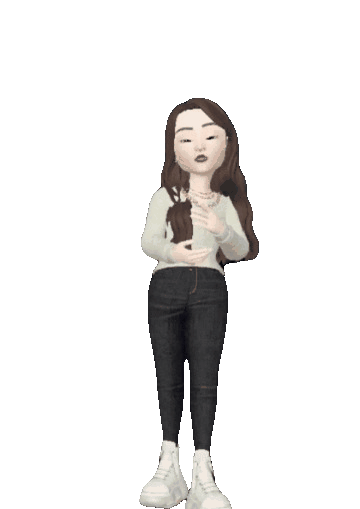
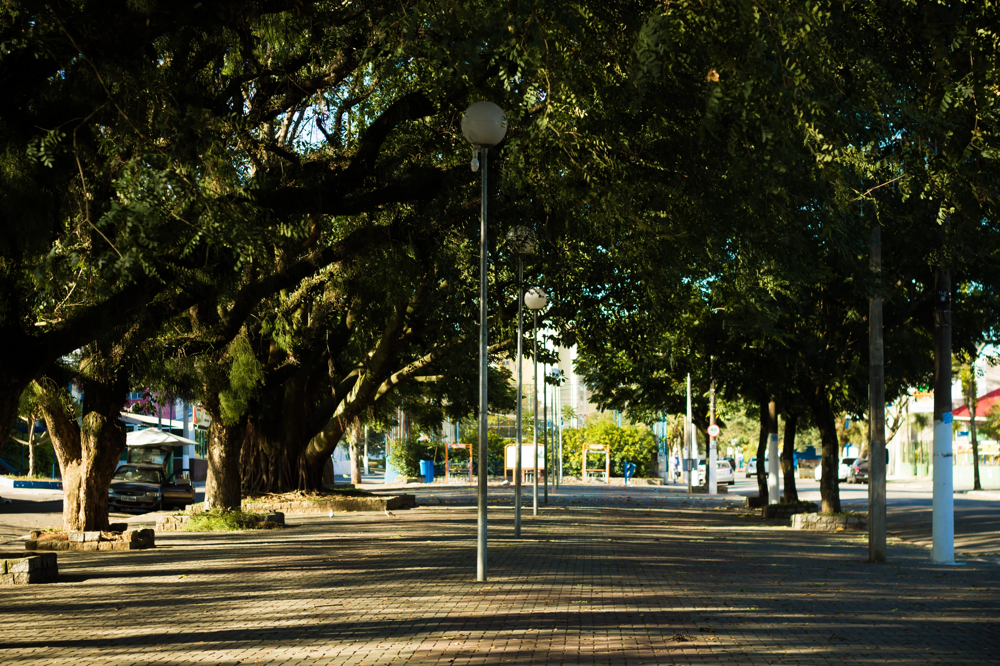

<!DOCTYPE html>
<meta charset="utf-8">

<head>
  <link rel="stylesheet" href=styleMeuportifolio.css>
  <link rel=" https://github.com/BRS23/portifolio.git">
  <link rel="imagens">
  <title>
        Portifólio
  </title>

  <header>
  <a>Portfólio</a>
  </header>
</head>

<main>
  <div class="display">
    <div class="texto" style="margin-left: 20px; margin-right: 20px;">
      <strong>
       <h1>Hey, there!</h1> 
      </strong>
      <p>Bem vindos ao meu portfólio,
        que também é o meu primeiro projeto <br> criado com
        as linguagens HTML e CSS
      </p>
      
    </div>
     <div style="margin-left: 20px; margin-right: 20px;">
       <div class="cards">
        <a href="#resumo">Sobre mim</a>
       </div>
       <div class="cards">
        Hobbies
       </div>
       <div class="cards">
        Contato
       </div>
    </div>
  </div>
<div class="display2">
  <H1>SOBRE MIM</H1>
   <H5>MENU</H5>
   <H5>HOBBIES</H5>
   <H5>CONTATO</H5>
  </div>
  <div class="pai">
    <div class="stars" >
    </div>
  <div class="resumo"id="resumo">
    <div>
    <div class="hello">
  Olá, me chamo Bianca e tenho 24 anos! 
</div>
<div class="texto_resumo"></div>Atualmente, estou na área administrativa há aproximadamente 2 anos;<br>
  Hoje, sou colaboradora de uma pequena empresa chamada Sertton, localizada na região de Guarulhos-Sp.<br>
  Porém, estou iniciando meus estudos na programação,<br> 
tendo como foco a carreira de Quality Assurance. <br><br>
Sei que será uma longa jornanda até obter os resultados esperados, mas sigo-me atualizando
 meus conhecimentos para obter sucesso e futuramente trabalhar nessa área. </div>
</div>
 <div>
  
</div>

<div class="curiosidades">
  <h1 class="curiosidades_curiosidades">curiosidades:</h1>
  <div class="div_curiosidades"> 
  
 ° Vivi boa parte da minha vida no estado de Alagoas, mas devido a baixa demanda de oportunidades
  resolvi me mudar para o meu estado natal.<br><br>
  </div>
  <div>
  
 °Nasci na cidade Arujá-SP, porém morei na região apenas até os meus 7 anos de idade.
</div>
</div>
</div>

</div>

  <div class="display5">
 <h1>Contato</h1>
WhatsApp (11) 93462-7103<br>
E-mail: bianca.s_rodrigues@hotmail.com
  </div>
</main>

<footer>
  <div>
    <div>
      <p>Desenvolvido por Bianca.</p>
      <a href="https://www.instagram.com/biancarodrigueixx/" target="_blank">
        </a>
      <a href="https://github.com/BRS23" target="_blank">
        </a>
      <a href="https://www.linkedin.com/in/bianca-rodrigues-31989718a/" target="_blank">
        </a>
    </div>
    <div>Acesse minhas redes</div>
  </div>

  <div class="Pagina_2">
    Sobre mim
  </div>

</footer>